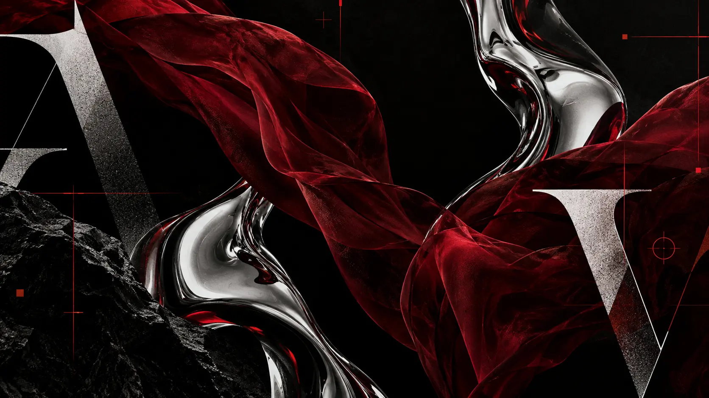
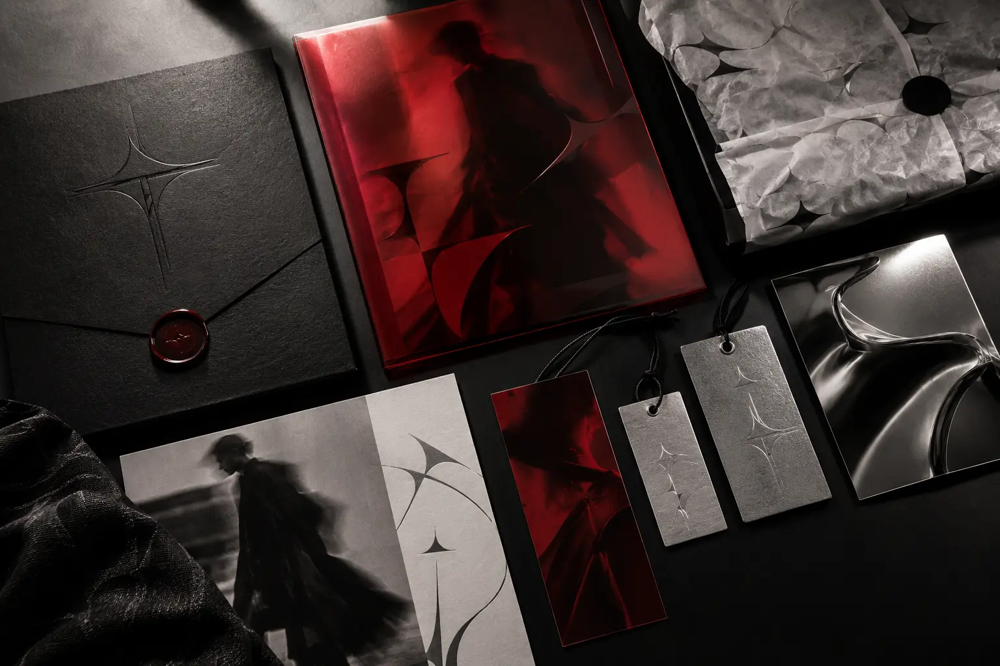
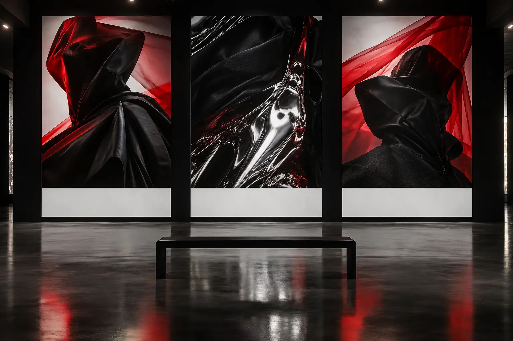
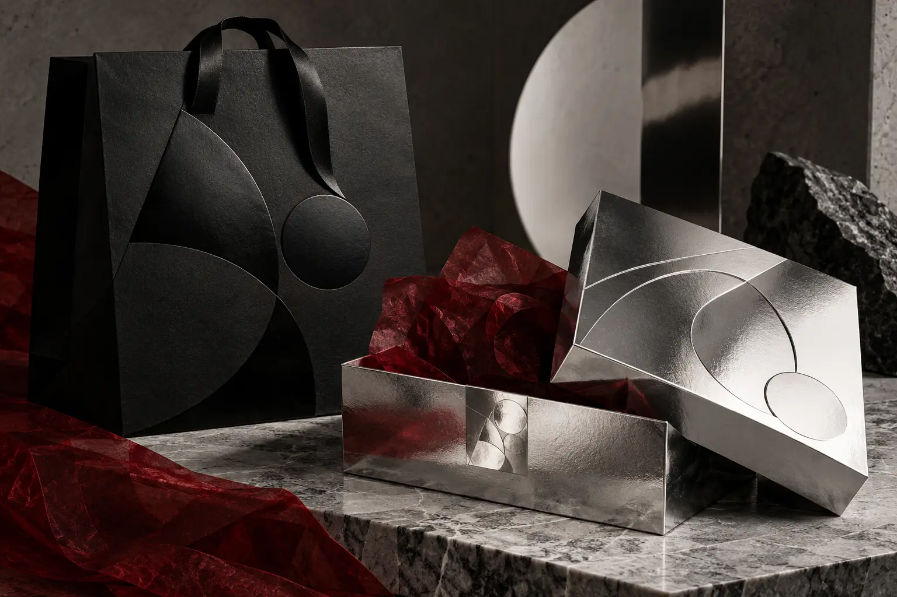
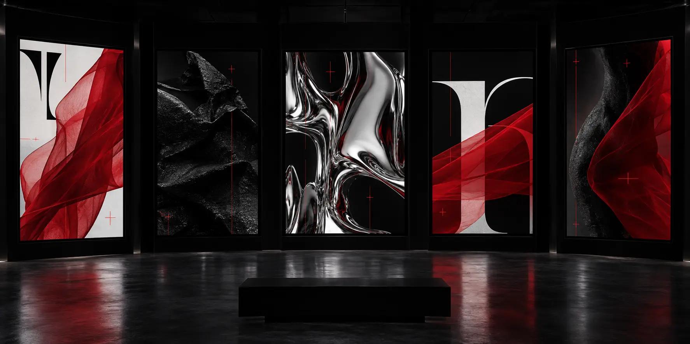

COLLECTION 01 / TRANSFORM
MORPH
Shape without permission.
NOT ONE FORM.
NEVER STILL.
THE CONCEPT
MORPH is a conceptual fashion label for garments that change with the body. The identity contrasts strict black tailoring with fluid crimson movement.
Morph
A high-contrast wordmark balances restraint with distortion. Its italic movement becomes the signature across labels, lookbooks and film titles.
BLACK
#070707CRIMSON
#C20D26CHROME
#A5A7A8SKIN
#ECE9E4
#070707CRIMSON
#C20D26CHROME
#A5A7A8SKIN
#ECE9E4
Move.
Expressive serif display type meets neutral product information, creating tension between emotion and precision.

COLLECTION / IDENTITY KITFOLD
SHIFT
FORM
SHIFT
FORM
Lookbooks, invitations, garment tags and packaging turn the collection into a tactile editorial system.

Abstract material studies become large-scale fashion images without relying on repeated model photography.


THE BODY
AS EDITOR.
THE LINE.COLLECTION 01 / 2026
08BLACK / CRIMSON / CHROME
TEMPORARY.DIRECTED IN MOVEMENT
CONTROLLED
INSTABILITY.
01 / HOLD
The silhouette remains still.
02 / DISTORT
Fabric moves across the frame.
03 / REFORM
The wordmark returns altered.
06 / FIVE FORM STUDIESNEVER
NEVER
ONE SHAPE.
Five editorial applications shift the identity between body, object, type and moving image.
TEMPORARY.
Type stretches and folds across the campaign.
M/01
A compact code for labels and invitations.
SHIFT
FORM
A controlled clash of serif and industrial type.
08
Product information becomes editorial composition.
DIFFERENT.
A cinematic frame built for distortion and reform.